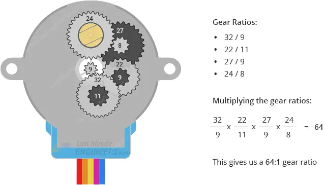

Kapitola 9: Krokový motor
Praxe – Arduino | 3. ročník

Po nastudování této kapitoly budete schopni:
- Vysvětlit pohyb krokového motoru a úlohu driveru.
- Zapojit 28BYJ-48 s modulem ULN2003.
- Změnit směr, počet kroků a rychlost.
- Použít vlastní funkce s argumentem.
- Porovnat plný krok a půlkrok a rozpoznat ztrátu kroků.

Klíčová slova kapitoly:
Krokový motor, 28BYJ-48, ULN2003, stator, rotor, vinutí, magnetické pole, převodovka, sekvence, plný krok, půlkrok, vlastní funkce, argument, ztráta kroků.
Opakování – hlídač vzdálenosti
Přibliž překážku. Rozsviť kontrolku.
HC-SR04: TRIG na D9, ECHO na D10, VCC na 5 V a GND na GND. LED připojte anodou přes rezistor 220–330 Ω na D6, katodou na GND.
- Měřte vzdálenost a vypisujte ji do sériového monitoru.
- Při platném výsledku menším než 20 cm LED rozsviťte, jinak ji zhasněte.
- Při chybě oznamte neplatné měření. Vyzkoušejte 10, 20 a 30 cm a stav bez odrazu.
Nejprve vytvoř vlastní řešení.
const byte TRIG = 9, ECHO = 10, LED = 6;
void setup() {
pinMode(TRIG, OUTPUT);
pinMode(ECHO, INPUT);
pinMode(LED, OUTPUT);
Serial.begin(9600);
}
void loop() {
digitalWrite(TRIG, LOW); delayMicroseconds(2);
digitalWrite(TRIG, HIGH); delayMicroseconds(10);
digitalWrite(TRIG, LOW);
unsigned long cas = pulseIn(ECHO, HIGH, 30000UL);
float cm = cas * 0.0343f / 2.0f;
bool platne = cas != 0 && cm >= 2 && cm <= 400;
digitalWrite(LED, platne && cm < 20 ? HIGH : LOW);
if (platne) Serial.println(cm);
else Serial.println("Neplatne mereni");
delay(100);
}
Jak vzniká krok
Vinutí statoru vytváří při průchodu proudu magnetické pole. Rotor se natáčí podle výsledného pole. Postupným přepínáním vinutí měníme požadovanou polohu a motor se pohybuje po krocích.
Počet kroků určuje požadované pootočení. Doba mezi kroky určuje požadovanou rychlost. Na rozdíl od běžného polohového serva neposíláme tomuto motoru přímo úhel příkazem write().
Vyzkoušejte princip krokového motoru
KROKOVÝ MOTOR · PRINCIP ČINNOSTI
Zapni cívku. Posuň rotor.
Sleduj, jak změna aktivní cívky pootočí rotor o malý krok.
Tyrkysová = zapnutá cívka · tmavá čára = poloha rotoru
Připraveno. Cívka 1 drží rotor v poloze.
Zuby rotoru jsou zarovnané se zuby cívky 1. Další krok zapne cívku 2.
Vyzkoušej a vysvětli
- Posuň rotor o čtyři kroky. Otočil se o celou otáčku?
- Změň směr. Jak se změní pořadí zapínání cívek?
- Vrať se na začátek a udělej jeden krok vpřed a jeden zpět.
Tento názorný model má 21 zubů rotoru a čtyři elektromagnety. Jeden krok odpovídá čtvrtině rozteče zubů, tedy přibližně 4,29°. Celou otáčku tvoří 84 kroků. Jde o vysvětlení principu, nikoli o řez či převodovku motoru 28BYJ-48.
Zapojení motoru a driveru
Použijeme 5V variantu 28BYJ-48 a modul ULN2003. Piny Arduina ovládají vstupy driveru; proud vinutí spíná driver. Motor nepřipojujte přímo k digitálním výstupům.

Podle tohoto schématu používáme v následujících programech piny D8, D9, D10 a D11 v pořadí IN1, IN2, IN3 a IN4.
| Modul ULN2003 | Zapojení |
|---|---|
| IN1 | D8 |
| IN2 | D9 |
| IN3 | D10 |
| IN4 | D11 |
| Konektor motoru | Odpovídající konektor 28BYJ-48 |
| Napájení motorové části | 5 V pro použitou variantu, zdroj s dostatečným proudem |
| GND | Společná zem driveru, zdroje a Arduina |
ULN2003 obsahuje tranzistorové spínače a ochranné diody pro indukční zátěže. Před zapnutím ověřte označení napájecích svorek svého modulu.
Převodovka a počet kroků
Převodovka zpomaluje výstupní hřídel. Pro školní výpočty použijeme převod přibližně 64 : 1 a jmenovitý počet 2 048 plných kroků na otáčku. V půlkrokovém režimu používáme přibližně 4 096 kroků.
Jak vznikne převod 64 : 1?
Uvnitř motoru je několik ozubených kol. Malé hnací kolo otáčí větším hnaným kolem, a tím snižuje jeho rychlost. Velké kolo a malý pastorek následujícího stupně jsou na společné ose a otáčejí se společně.

Převod jednoho stupně vypočítáme jako počet zubů hnaného kola dělený počtem zubů hnacího kola. Převody jednotlivých stupňů se mezi sebou násobí.
| Stupeň | Hnací kolo | Hnané kolo | Převod |
|---|---|---|---|
| 1. | 9 zubů | 32 zubů | 32 / 9 |
| 2. | 11 zubů | 22 zubů | 22 / 11 = 2 |
| 3. | 9 zubů | 27 zubů | 27 / 9 = 3 |
| 4. | 8 zubů | 24 zubů | 24 / 8 = 3 |
i = (32 / 9) × (22 / 11) × (27 / 9) × (24 / 8) = 64
Vyzkoušejte výpočet: Kolikrát se otočí rotor, když se výstupní hřídel otočí o čtvrt otáčky?
Zobrazit vysvětlení
Výstup udělá ¼ otáčky, rotor tedy 64 / 4 = 16 otáček. To odpovídá 16 × 32 = 512 plným krokům.
Počet kroků a výsledný úhel
| Pohyb | Plný krok | Půlkrok |
|---|---|---|
| 90° | 512 | 1 024 |
| 180° | 1 024 | 2 048 |
| 360° | 2 048 | 4 096 |
Výpočet: úhel = počet kroků × 360 / kroky na otáčku. Skutečný převod se může podle provedení lišit; přesné polohování vyžaduje ověření konkrétního motoru.
Sekvence a změna směru
Základní úlohy používají dva aktivní výstupy současně. Hodnota 1 znamená HIGH, hodnota 0 LOW.
| Stav | IN1 | IN2 | IN3 | IN4 |
|---|---|---|---|---|
| 0 | 1 | 1 | 0 | 0 |
| 1 | 0 | 1 | 1 | 0 |
| 2 | 0 | 0 | 1 | 1 |
| 3 | 1 | 0 | 0 | 1 |
Vpřed: 0 → 1 → 2 → 3 → 0. Vzad: 0 → 3 → 2 → 1 → 0. Každý přechod je jeden krok; úplný průchod tabulkou jsou čtyři kroky.
Režim jednoho vinutí střídá 1000, 0100, 0010, 0001. Půlkrok střídá jedno a dvě vinutí: 1000, 1100, 0100, 0110, 0010, 0011, 0001, 1001.
Vlastní funkce a argument
Funkce sdružuje opakovanou činnost. Argument určí, kolikrát se má krok provést. Proměnná aktuálního stavu musí přežít konec funkce, aby další volání navázalo.
void stepForward(int numSteps);
void stepBackward(int numSteps);
// Volání: požadavek na 512 kroků.
stepForward(512);Samotné nastavení počátečního stavu neznamená nalezení mechanické nuly. Program bez snímače neví, jak byla hřídel natočena před zapnutím.
Samostatné úlohy a simulace
1. Ruční objevování sekvence
Zadání: S napájeným driverem a odpojenými řídicími piny Arduina pod vedením učitele postupně aktivujte vstupy IN1–IN4. Pro ruční připojování používejte vstupy driveru, nikoli vývody motoru.
Kontrola: Najděte pořadí pro pohyb a zkuste opačné pořadí.
2. Motor řídí Arduino
Zadání: Nastavte D2–D5 jako výstupy a opakujte čtyřstavovou sekvenci pomocí digitalWrite(). Začněte prodlevou 5 ms.
Kontrola: Obraťte pořadí a sledujte směr.
3. Vlastní funkce pro pohyb
Zadání: Vytvořte stepForward(int numSteps) a stepBackward(int numSteps). Stav sekvence zachovejte mezi voláními.
Kontrola: Proveďte 100 kroků vpřed a 100 zpět.
4. Čtvrt otáčky vpřed, půl vzad
Zadání: Opakujte 512 kroků vpřed, pauzu 1 s, 1 024 kroků vzad a pauzu 1 s. Použijte plný krok.
Kontrola: Po jednom cyklu je výsledná změna −512 kroků, tedy přibližně −90°.
5. Porovnání režimů a rychlosti
Zadání: Porovnejte jedno vinutí, dvě vinutí a půlkrok. Prodlevu zkracujte postupně a zaznamenávejte skutečný pohyb.
Kontrola: Porovnávejte otáčky hřídele, nikoli pouze stejné prodlevy. Určete, kdy motor začne ztrácet kroky.
VINUTÍ · SEKVENCE · POHYB
Sleduj stav. Počítej kroky.
Připraveno.
Pro jednotlivé stavy použij 100 ms, pro delší pohyb 5 ms. Model počítá ideální kroky; ztrátu kroků a nejvyšší skutečnou rychlost ověř na motoru. Reset nastaví pouze nulu modelu.
Připraveno.
Nejprve vytvoř vlastní řešení.
Ruční úloha nemá Arduino program. Pořadí jednoho aktivního vstupu je IN1 → IN2 → IN3 → IN4; opačné pořadí obrací pohyb.
Řešení úlohy 2
const byte piny[4] = {8, 9, 10, 11};
const byte sekvence[4][4] = {
{1, 1, 0, 0},
{0, 1, 1, 0},
{0, 0, 1, 1},
{1, 0, 0, 1}
};
const byte pocetStavu = 4;
const unsigned int prodlevaMs = 5;
byte stav = 0;
void nastavVystupy() {
for (byte i = 0; i < 4; i++)
digitalWrite(piny[i], sekvence[stav][i]);
}
void jedenKrok(int smer) {
stav = (stav + (smer > 0 ? 1 : pocetStavu - 1)) % pocetStavu;
nastavVystupy();
delay(prodlevaMs);
}
void stepForward(int numSteps) {
for (int i = 0; i < numSteps; i++) jedenKrok(1);
}
void stepBackward(int numSteps) {
for (int i = 0; i < numSteps; i++) jedenKrok(-1);
}
void uvolniMotor() {
for (byte i = 0; i < 4; i++) digitalWrite(piny[i], LOW);
}
void setup() {
for (byte i = 0; i < 4; i++) pinMode(piny[i], OUTPUT);
nastavVystupy();
delay(100);
}
void loop() {
jedenKrok(1);
}
Řešení úlohy 3
const byte piny[4] = {8, 9, 10, 11};
const byte sekvence[4][4] = {
{1, 1, 0, 0},
{0, 1, 1, 0},
{0, 0, 1, 1},
{1, 0, 0, 1}
};
const byte pocetStavu = 4;
const unsigned int prodlevaMs = 5;
byte stav = 0;
void nastavVystupy() {
for (byte i = 0; i < 4; i++)
digitalWrite(piny[i], sekvence[stav][i]);
}
void jedenKrok(int smer) {
stav = (stav + (smer > 0 ? 1 : pocetStavu - 1)) % pocetStavu;
nastavVystupy();
delay(prodlevaMs);
}
void stepForward(int numSteps) {
for (int i = 0; i < numSteps; i++) jedenKrok(1);
}
void stepBackward(int numSteps) {
for (int i = 0; i < numSteps; i++) jedenKrok(-1);
}
void uvolniMotor() {
for (byte i = 0; i < 4; i++) digitalWrite(piny[i], LOW);
}
void setup() {
for (byte i = 0; i < 4; i++) pinMode(piny[i], OUTPUT);
nastavVystupy();
delay(100);
}
void loop() {
stepForward(100); delay(1000);
stepBackward(100); delay(1000);
}
Řešení úlohy 4
const byte piny[4] = {8, 9, 10, 11};
const byte sekvence[4][4] = {
{1, 1, 0, 0},
{0, 1, 1, 0},
{0, 0, 1, 1},
{1, 0, 0, 1}
};
const byte pocetStavu = 4;
const unsigned int prodlevaMs = 5;
byte stav = 0;
void nastavVystupy() {
for (byte i = 0; i < 4; i++)
digitalWrite(piny[i], sekvence[stav][i]);
}
void jedenKrok(int smer) {
stav = (stav + (smer > 0 ? 1 : pocetStavu - 1)) % pocetStavu;
nastavVystupy();
delay(prodlevaMs);
}
void stepForward(int numSteps) {
for (int i = 0; i < numSteps; i++) jedenKrok(1);
}
void stepBackward(int numSteps) {
for (int i = 0; i < numSteps; i++) jedenKrok(-1);
}
void uvolniMotor() {
for (byte i = 0; i < 4; i++) digitalWrite(piny[i], LOW);
}
void setup() {
for (byte i = 0; i < 4; i++) pinMode(piny[i], OUTPUT);
nastavVystupy();
delay(100);
}
void loop() {
stepForward(512); delay(1000);
stepBackward(1024); delay(1000);
}
Řešení úlohy 5
const byte piny[4] = {8, 9, 10, 11};
const byte sekvence[8][4] = {
{1, 0, 0, 0},
{1, 1, 0, 0},
{0, 1, 0, 0},
{0, 1, 1, 0},
{0, 0, 1, 0},
{0, 0, 1, 1},
{0, 0, 0, 1},
{1, 0, 0, 1}
};
const byte pocetStavu = 8;
const unsigned int prodlevaMs = 5;
byte stav = 0;
void nastavVystupy() {
for (byte i = 0; i < 4; i++)
digitalWrite(piny[i], sekvence[stav][i]);
}
void jedenKrok(int smer) {
stav = (stav + (smer > 0 ? 1 : pocetStavu - 1)) % pocetStavu;
nastavVystupy();
delay(prodlevaMs);
}
void stepForward(int numSteps) {
for (int i = 0; i < numSteps; i++) jedenKrok(1);
}
void stepBackward(int numSteps) {
for (int i = 0; i < numSteps; i++) jedenKrok(-1);
}
void uvolniMotor() {
for (byte i = 0; i < 4; i++) digitalWrite(piny[i], LOW);
}
void setup() {
for (byte i = 0; i < 4; i++) pinMode(piny[i], OUTPUT);
nastavVystupy();
delay(100);
}
void loop() {
stepForward(4096); delay(1000);
stepBackward(4096); delay(1000);
}
Když se motor nechová správně
- Jen vibruje: ověřte pořadí IN1–IN4 a návaznost stavů.
- Zastavuje se při zrychlení: prodlužte čas mezi kroky, zkontrolujte napájení a mechanickou zátěž.
- Počet kroků nesouhlasí s úhlem: rozlišujte plný krok, půlkrok a převod konkrétního motoru.
- Při pauze zůstává motor buzený a může držet polohu. Funkce uvolniMotor() buzení vypne, ale nezajistí zachování polohy.
- Po odpojení napájení není mechanická poloha automaticky známá. Pro skutečnou referenční nulu je potřeba vhodný postup nebo snímač.

Shrnutí:
V této kapitole jste se dozvěděli, jak sekvence spínání vinutí mění polohu krokového motoru. Pomocí driveru jste oddělili řídicí signály od proudu motoru. Počet kroků jste převedli na úhel a vytvořili vlastní funkce. Porovnali jste režimy řízení a vysvětlili, proč požadovaný pohyb nemusí při ztrátě kroků odpovídat skutečnému.
Průvodce studiem:
Nejdříve si projděte tabulku sekvence oběma směry. Ověřte pomalý pohyb, potom počítání kroků. Funkce přidejte až při správné návaznosti stavů. Rychlost zvyšujte nakonec a zapisujte výsledky skutečného motoru.

Kontrolní otázky:
1. Co vytváří magnetické pole vinutí?
Elektrický proud.
2. Stačí pro souvislé otáčení trvale zapnout jeden stav?
Ne. Je potřeba měnit stavy ve správném pořadí.
3. Jak obrátíte směr?
Obrátím pořadí sekvence.
4. Proč potřebujeme driver?
Piny Arduina nejsou určeny k přímému spínání proudu vinutí.
5. Co dělá ULN2003?
Podle vstupů spíná proud vinutí.
6. Proč propojujeme GND?
Řídicí signály potřebují společnou napěťovou referenci.
7. K čemu slouží převodovka?
Zpomaluje výstupní hřídel a zjemňuje její polohování.
8. Kolik plných kroků počítáme na otáčku?
Jmenovitě 2 048; konkrétní převod je vhodné ověřit.
9. Kolik plných kroků je čtvrt otáčky?
512.
10. Kolik půlkroků je půl otáčky?
Přibližně 2 048.
11. Kolik kroků obsahuje jeden průchod čtyřmi stavy?
Čtyři kroky.
12. Co mění prodleva mezi kroky?
Požadovanou rychlost.
13. Co je ztráta kroků?
Motor nevykonal všechny požadované kroky.
14. Pozná náš program ztrátu kroků automaticky?
Ne, nemá zpětnou vazbu o poloze.
15. Co znamená numSteps?
Počet požadovaných kroků předaný funkci.
16. Proč uchováváme stav mimo funkci?
Další volání musí navázat na předchozí elektrický stav.
17. Jaký je rozdíl mezi plným krokem a půlkrokem?
Půlkrok používá mezistavy a pro stejný úhel potřebuje přibližně dvojnásobný počet kroků.
18. Proč není stejná prodleva spravedlivé porovnání rychlosti režimů?
Režimy mají různou velikost kroku.
19. Jaký je výsledek 512 kroků vpřed a 1 024 vzad?
−512 kroků, v našem plnokrokovém modelu −90°.
20. Co udělá uvolniMotor()?
Vypne buzení všech vinutí.
21. Znamená stav = 0 mechanickou nulu?
Ne, jde o index elektrické sekvence.
22. Proč může motor při dlouhé pauze odebírat proud?
Pokud ponecháme výstupy aktivní, zůstává vinutí buzené.
Zdroje
Podklad: dodaný dokument Krokový motor | PRA. Původní lekce Tomáše Chovance. Technické informace ULN2003A.